ESTRATÉGIA
2.1 Missão e Visão
2.2 Visão Geral da Marca
2.2 Visão Geral da Marca
02
ESTRATÉGIA

Spine Unit by Sérgio Salvador
Spine Unit é uma marca especializada em neurocirurgia que combina tecnologia avançada com um cuidado humano profundo.
Nosso objetivo é oferecer segurança, precisão e clareza em cada etapa do tratamento, proporcionando ao paciente confiança e tranquilidade.
Acreditamos que excelência técnica deve caminhar junto com empatia.
Cada decisão é baseada em conhecimento profundo e responsabilidade com a vida do paciente. Nossa comunicação é clara, objetiva e acolhedora.
Neurocirurgião
Sérgio Salvador é uma marca pessoal médica premium que une a mais alta autoridade em neurocirurgia com um posicionamento autoral e exclusivo.
Nossa essência reside na precisão absoluta do gesto técnico aliada à sensibilidade de quem entende que a medicina é, antes de tudo, um encontro entre seres humanos.
Autoridade. Precisão. Humanidade.
O logotipo de Sérgio Salvador é uma extensão de sua identidade profissional: sólida, clara e sofisticada. O símbolo orgânico vertical reflete a anatomia com fluidez e precisão, reforçando a organicidade aliada ao rigor técnico.

A construção da marca segue um rigor geométrico que emoldura um símbolo orgânico, simbolizando o domínio técnico (geometria) sobre a vida (curva).
Museo Moderno Regular
Afacad Medium
Para preservar a elegância dos traços finos da tipografia, o logotipo não deve ser reduzido abaixo do limite estabelecido.
Para garantir o contraste e a legibilidade da marca, as versões do logotipo devem ser aplicadas conforme o fundo correspondente.

A marca pessoal no jaleco reforça a autoridade e o cuidado, com bordados finos que respeitam a sobriedade do ambiente cirúrgico.

O receituário pessoal do Dr. Sérgio Salvador utiliza um layout limpo e sofisticado, garantindo clareza técnica e legibilidade absoluta.

O cartão de visita reflete o posicionamento premium através de acabamentos especiais e um design minimalista que foca no essencial.

A identificação oficial utiliza a marca em sua versão simplificada, garantindo reconhecimento imediato com elegância.

A sinalização de ambiente utiliza a paleta de tons profundos, garantindo uma presença constante e segura da marca pessoal.

O ambiente de recepção é o palco da autoridade autoral do Dr. Sérgio Salvador, onde cada detalhe evoca precisão e acolhimento.

A interface mobile foca na proximidade com o paciente, oferecendo uma navegação refinada e de alta performance.

O ecossistema digital do Dr. Sérgio Salvador apresenta sua autoridade técnica através de uma experiência web sofisticada e clara.
A marca Sérgio Salvador traduz o domínio da tecnologia na sensibilidade de quem cuida da vida com clareza e respeito.